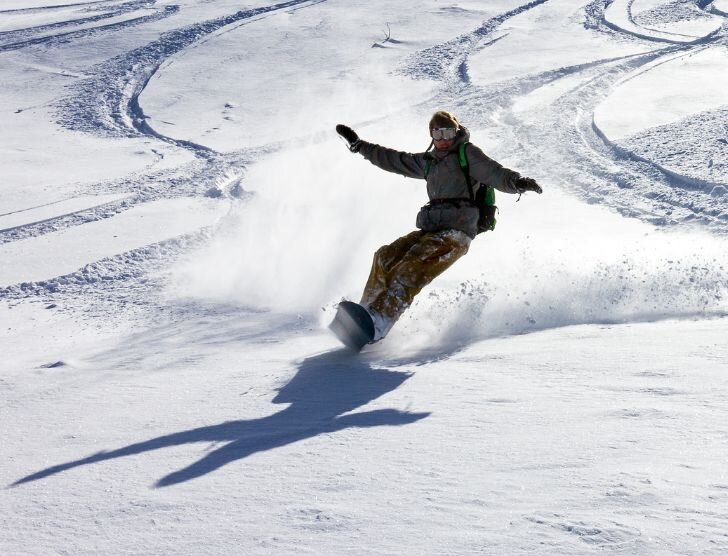
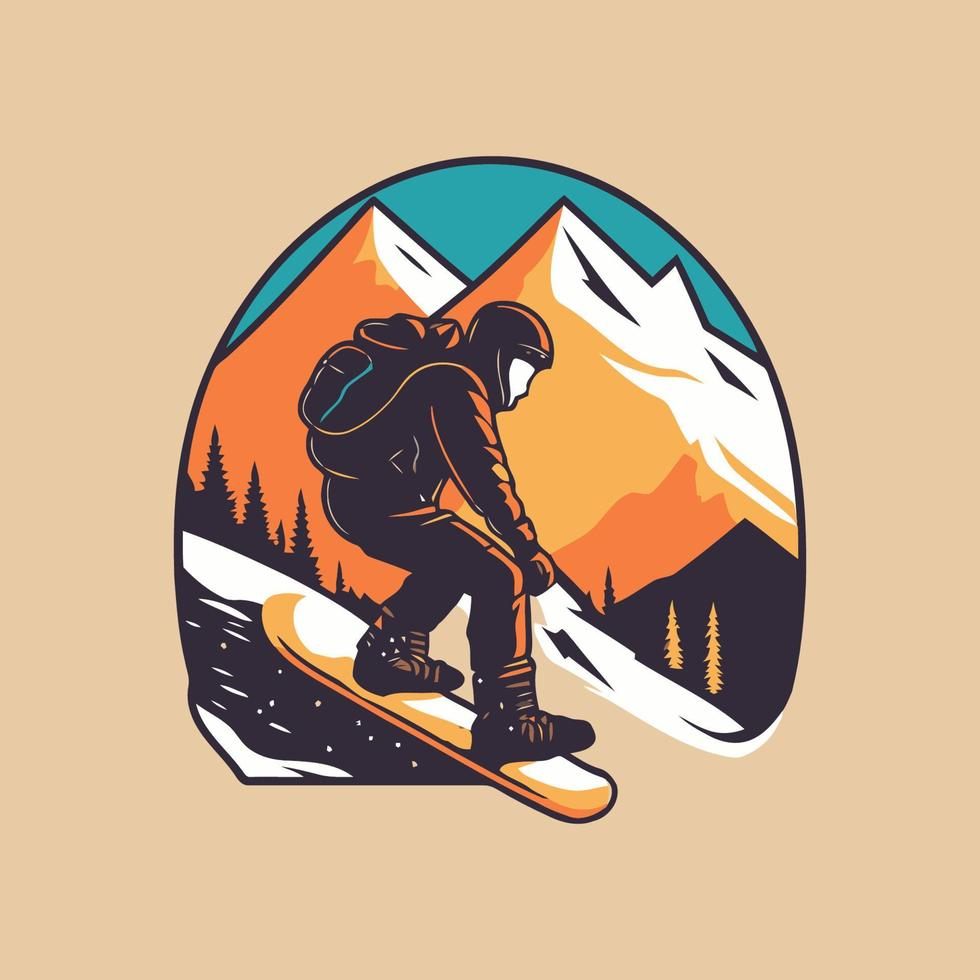

O czym jest ta strona?
Strona jest poświęcona mojej pasji do snowboardu. Znajdziesz tutaj moją historię, poradniki dla początkujących oraz sprawdzone wskazówki dotyczące jazdy.


Strona jest poświęcona mojej pasji do snowboardu. Znajdziesz tutaj moją historię, poradniki dla początkujących oraz sprawdzone wskazówki dotyczące jazdy.
